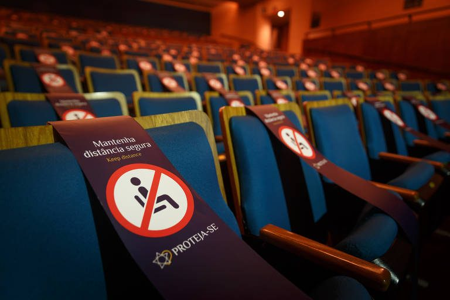
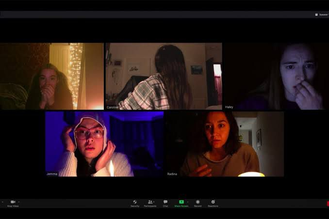

Durante a quarentena, mais de 300 salas de cinemas foram fechadas no Brasil, ocasionando inúmeros problemas no setor cinematográfico. É notório destacar que esse período foi marcado como a maior crise desse setor em todos os tempos, segundo a Fennec, ou, Federação Nacional das Empresas Exibidoras Cinematográficas.
Apesar da pandemia do coronavírus ocasionar a paralisação da produção de diversos filmes e séries ao redor do mundo, ideias interessantes surgiram durante O período e novas produções aconteceram mesmo diante de tantas limitações. O mesmo acontece com o setor teatral, ambos buscaram novas formas de passar a cultura para o público.
"Host", um filme completamente desenvolvido e gravado através de videoconferência. Foi escrito, filmado e editado durante o confinamento social, sem os atores precisarem se deslocar e desrespeitar as regras de isolamento. Levando isso como uma nova forma de passar o conteúdo para o público e reinventando completamente o cinema.
Dirigido por Rob savage, Host segue a história de um grupo de seis amigos isolados em suas casas durante a quarentena. Eles contatam uma médium para uma sessão conjunta através de uma vídeo-chamada, mas o grupo acaba despertando um espírito maligno que ataca cada um dos membros, estes então precisam lutar pela sua sobrevivência.
Nesse período, foram criadas diversas plataformas de streaming, muitas já existiam, mas ganharam mais popularidade nesse meio pandêmico, já que os cinemas estavam fechados para o público. Um grande exemplo disso é a Disney Plus, a mesma surgiu na pandemia, pois os filmes da Disney passavam apenas no cinema, possibilitando ao público uma forma de consumir aquele conteúdo sem precisar sair de casa. Por ser algo de fácil acesso, onde você tem a escolha de assistir onde e quando quiser, torna-se mais atrativo.
O Teatro On-line é um formato de apresentação de espetáculos teatrais pensado e apresentado especificamente para a execução no universo digital. Pode ser concebido e transmitido em diversas plataformas dependendo da proposta da peça. Deve-se isso a uma forma de manter o teatro vivo, mas pessoas que já participaram de ambos meios teatrais afirmam: "O encontro no teatro é uma experiência única".
